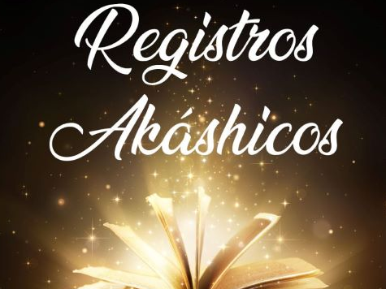
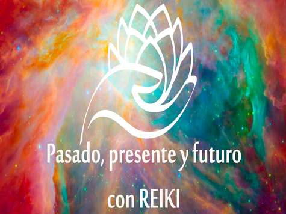
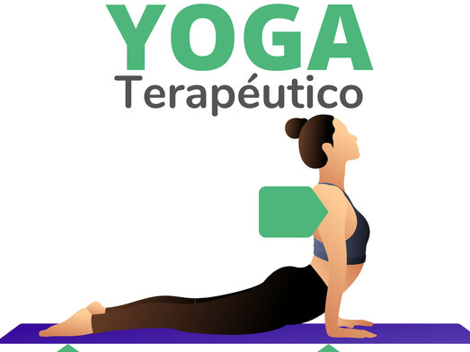
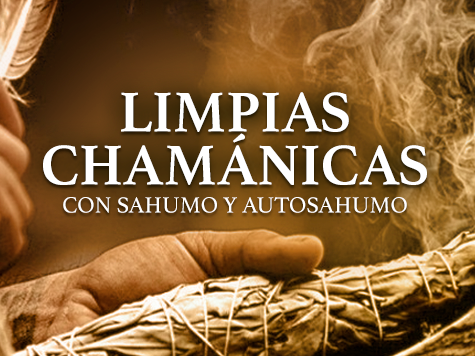
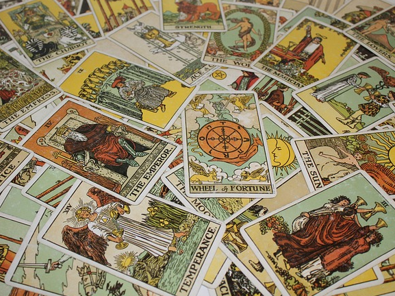

Terapias
Los Registros Akáshicos son una dimensión de la conciencia que alberga la impronta del viaje del Alma, a través del espacio-tiempo tanto material como inmaterial. Es también conocido como el "Libro de la Vida" y permite acceder al conocimiento presente, pasado y futuro de todas las cosas..
Terapias
El Reiki es una técnica de canalización y transmisión de energía vital a través de la imposición de manos que sirve para equilibrar los chakras de tu cuerpo. Es decir, para conseguir el bienestar en todos los niveles: físico, mental, emocional y espiritual..
Terapias
El yoga es una práctica que conecta el cuerpo, la respiración y la mente. Esta práctica utiliza posturas físicas, ejercicios de respiración y meditación para mejorar la salud general. El yoga se desarrolló como una práctica espiritual hace miles de años.
Terapias
El Sahumo es un antiguo ritual que, por medio de la quema de plantas medicinales, trabaja sobre la limpieza, curación, protección y alineación del espíritu. Hay distintos tipos de sahumos y para diferentes propósitos con diversos elementos.
Terapias

Práctica de la medicina tradicional china y japonesa que consiste en la introducción de agujas muy finas en determinados puntos del cuerpo humano para aliviar dolores, anestesiar determinadas zonas y curar ciertas enfermedades.
Terapias
El tarot es una herramienta antigua para la adivinación. Una baraja tradicional se compone de 78 cartas que contienen cuatro palos y una serie de cartas de sujetos, cada uno con un significado particular. Algunos usan el tarot para dar lecturas de predicción para los demás o como una forma de meditación personal.
Terapias

El objetivo de las constelaciones familiares es ser conscientes de que estamos interconectados, que como seres humanos no venimos solos al mundo, que nos humanizamos a través de la relación que tenemos con nuestros padres. Las constelaciones familiares nos devuelven la mirada hacia nuestros ancestros y nuestras raíces.
Terapias

Las barras de access trata de presionar 32 puntos en la cabeza para permitir que la energía fluya por todo el cuerpo. Las barras serían algo así como las autopistas por las que esa energía transita, que muchas veces están bloqueadas con pensamientos o emociones que impiden su buen desplazamiento.